生肖
Chinese Zodiac


Shēngxiào
The Shēngxiào literally “birth likeness”, is a scheme and systematic plan of future action that relates each year to an animal and its reputed attributes according to a 12-year mathematical cycle and it remains popular in several East Asian countries including China, Vietnam, Korea, Japan, and Thailand.
Dragon


Magnanimous, stately, vigorous, strong, proud, noble, direct, dignified, passionate.
Goat
 

Gentle, softhearted, considerate, attractive, hardworking, persistent, thrift.
Rooster
Deep thinkers, honest, bright, communicative, ambitious, capable, warm-hearted.
Ox


Persistent, simple, honest, straightforward, industrious, patient, cautious.